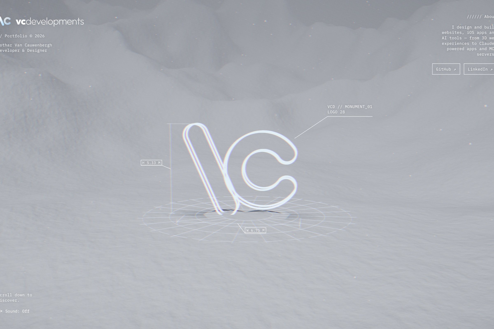
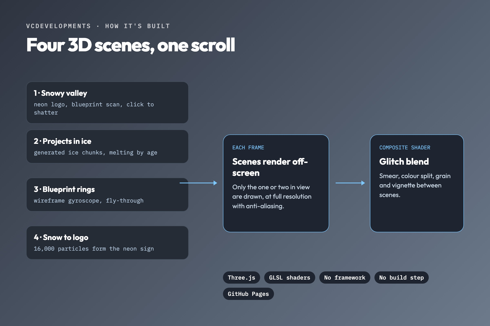
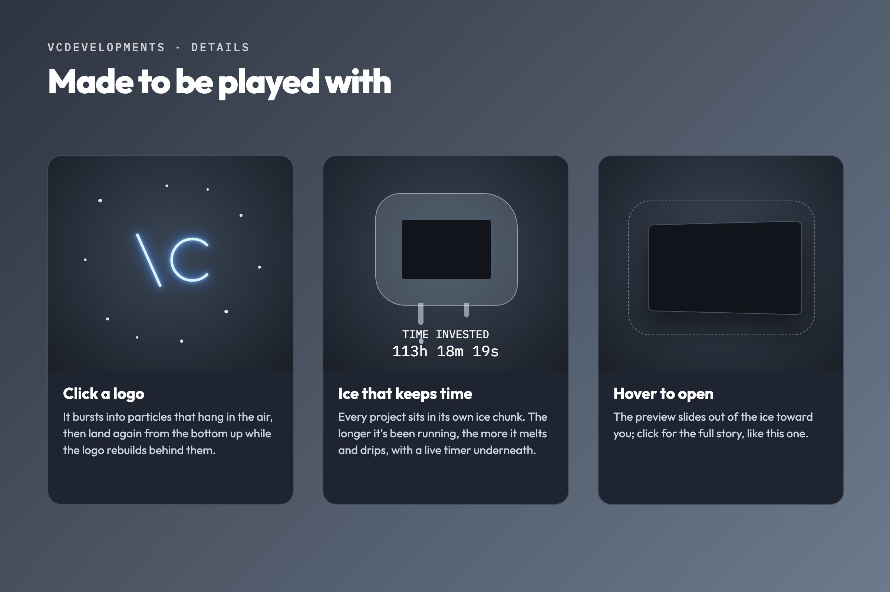

Live
VCDevelopments
The site you are on: a scroll-driven 3D experience written from scratch with Three.js, without a framework or a build step.



Four scenes, one scroll
A snowy valley with the neon logo, these projects running live on 3D phones you can use, a wireframe blueprint gyroscope, and a cloud of snow that becomes the logo. Each scene is drawn off-screen, and a final shader blends them with a glitch transition as you scroll.
Generated, not modelled
The terrain, the devices and the logo are all built in code, no 3D models loaded. Every phone runs a working demo of its project that you can tap through, with a live timer underneath counting the time put into it.
Made to be played with
Click a logo and it bursts into particles that rebuild it from the bottom up. Hover a phone and it turns to face you so you can try the app on it. The sound follows how fast you scroll.
Kept smooth
Scrolling follows a spring for smooth motion, pictures are loaded before they are needed, scenes out of view skip their work, and every file is versioned so visitors always get the latest one.